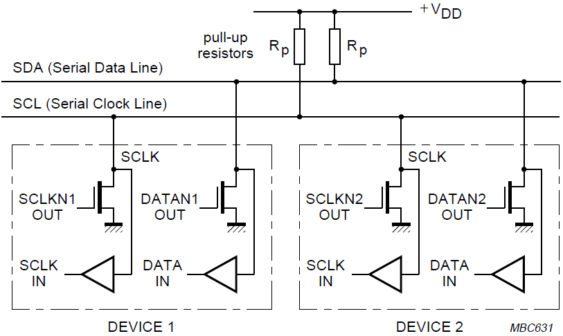
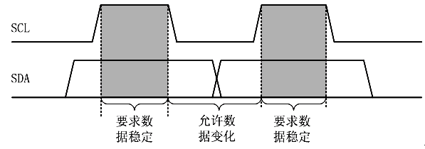
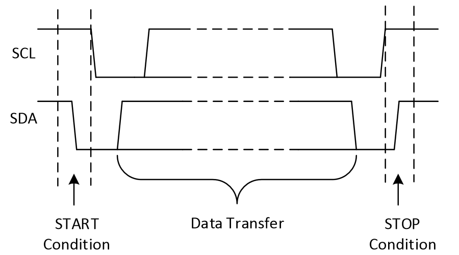
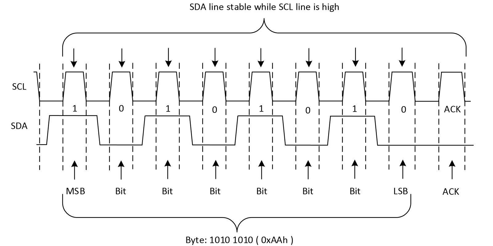
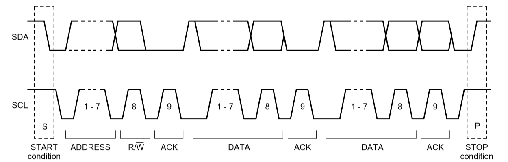
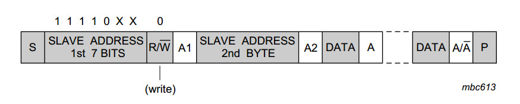
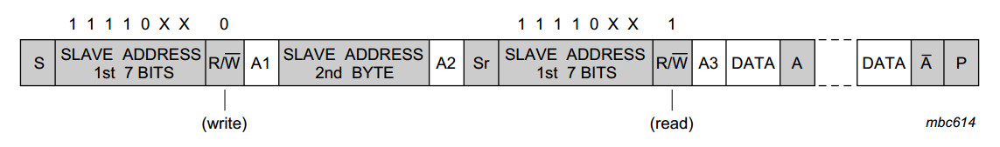

1. 说明
iic作为当今嵌入式应用中最常见的串行通信协议之一我愿将其与UART和SPI并称三幻神，是对于嵌入式开发者是最基本的要求，因为老是会忘记iic协议的一些细节，故作记录。
2. iic简介
IIC(Inter－Integrated Circuit)总线是一种由NXP（原PHILIPS）公司开发的两线式串行总线，用于连接微控制器及其外围设备。是一种半双工同步的低速通信协议。多用于主控制器和从器件间的主从通信，在小数据量场合使用，传输距离短，任意时刻只能有一个主机等特性。
IC使用两根信号线进行通信：一根时钟线SCL，一根数据线SDA。IIC将SCL处于高时SDA拉低的动作作为开始信号，SCL处于高时SDA拉高的动作作为结束信号；传输数据时，SDA在SCL低电平时改变数据，在SCL高电平时保持数据，每个SCL脉冲的高电平传递1位数据。
3. 主要特性
- IC用2根信号线通信：串行数据线 SDA、串行时钟线 SCL；
- IIC总线上所有器件的SDA、SCL引脚输出驱动都为开漏(OD) 结构，通过外接上拉电阻实现总线上所有节点SDA、SCL信号的线与逻辑关系；
- 总线上的所有设备通过软件寻址且具有唯一的地址（7位或10位）。7位“从机专用地址码”，其高4位为由生产厂家制定的设备类型地址，低3位为器件引脚定义地址（由使用者定义）；10位地址不常见；
- 任何时刻都只存在简单的主从关系，按数据传输的方向，主机可以是主发送器或主接收器；
- 支持多主机。在总线上存在多个主机时，通过冲突检测和仲裁机制防止多个主机同时发起数据传输时存在的冲突；
- IIC总线上所有器件都具有“自动应答”功能，保证数据传输的正确性； 主机和从机的区别在于对SCL的发送权，只有主机才能发送SCL；
- IIC总线允许挂载最多的设备数量取决于总线上最大电容值，一般为400pf（Hs模式100pf）
- 有严格的时间窗口要求（建立时间（Setup Time）和保持时间（Hold Time））。
支持的传输速率：
| 模式 | 速度 |
|---|---|
| 标准模式（Standard Mode） | 100kb/s |
| 快速模式（Fast Mode） | 400kb/s |
| 增强快速模式（Fast Mode Plus） | 1Mb/s |
| 高速模式（High Speed Mode） | 3.4Mb/s |
| 极速模式（Ultra-FastMode） | 5Mb/s |
4. 硬件特性及其高级机制
4.1. 总线结构
IIC使用两根信号线进行通信，要求两根线都使用 开漏输出接上拉电阻 的配置，以此实现总线上所有节点SDA、SCL信号的线与逻辑关系。
Rp电阻的取值有一定的要求，太小会导致灌入电流过大，使’低’数据不稳定，甚至损坏端口；太大会导致信号上升缓慢，使得数据传输出错。在不同应用场景及供电电压下有不同的取值要求。

4.2. 开漏输出
开漏输出回顾：当输入为高电平时，三级管导通，输出为低电平。输入为低电平，输出不确定，在这种情况下，如果使用强上拉，则可以输出高电平。开漏输出是实现”线与“的一种方案。
4.3. 线与
多个开漏输出连接在一起时，只要有一个输入为低电平，那么总体表现为低电平（处于低电平的那个io口把vdd流向Vout的电流引走了）。

“线与“使得总线上不会出现数据冲突，实现了总线的仲裁控制。总线的控制权会交给最后一个输出低电平的设备，其它设备（输出高）通过检测总线上的电平状态（状态低），对比与自己输出状态不一致，则自动退出对总线的控制请求，从而防止了总线上的数据冲突。
4.4 高级机制
4.4.1 时钟拉伸
在理想状态下，时钟线 SCL 完全由主机掌控。但如果遇到这种情况：主机发送数据的速度太快，而从机（比如一个正在进行复杂运算的 ADC 芯片或 EEPROM）来不及处理上一个字节，怎么办？
I2C 允许从机反向控制时钟线，这就是时钟拉伸。
- 主机释放 SCL： 在传输完一个 bit 后，主机内部的输出级会释放 SCL（输出 1/高阻态），期望外部的上拉电阻将 SCL 拉高，以便传输下一个 bit。
- 从机强制拉低 SCL： 如果从机还没准备好，它可以在这个时候主动把 SCL 拉低（输出 0）。
- 主机的等待机制： 根据“线与”逻辑，只要从机拉低了 SCL，整条总线就是低电平。主机在准备拉高 SCL 发送下一位时，会去检测 SCL 的实际电平。如果主机发现自己释放了 SCL，但 SCL 依然是低电平，主机就会明白：“哦，从机还没忙完”。
- 恢复通信： 主机会进入等待状态，直到从机处理完毕并释放 SCL。此时上拉电阻将 SCL 拉高，主机检测到高电平后，才继续产生时钟信号。
4.4.2 总线仲裁
I2C 允许多个主机挂在同一条总线上。如果两个主机在完全相同的时刻想要控制总线（同时发出 Start 信号），它们不仅不会造成电路短路（因为是开漏输出，没有电源对地的直接通路），还能通过一套极其优雅的机制决出胜负。
仲裁的核心法则是：“0 战胜 1”（拉低电平的设备获胜）。
- 同时发车： 主机 A 和主机 B 同时检测到总线空闲，同时发出 Start 信号，并开始发送地址。
- 边发边听： I2C 的设备在发送数据的同时，也会实时读取 SDA 线上的实际电平。
- 冲突发生： 假设主机 A 想发送
1（释放 SDA，期望被上拉变高），而主机 B 想发送0（拉低 SDA）。 - 线与的魔法： 根据线与逻辑，此时总线实际表现为
0（低电平）。 - 仲裁结果： * 主机 B 想发
0，读回来也是0，它认为一切正常，继续发送。- 主机 A 想发
1，但读回来却是0。主机 A 瞬间意识到：“有其他设备把总线拉低了，我发生了冲突！”
- 主机 A 想发
- 默默退出： 发现自己发送与读取不一致的主机 A，会立刻判定自己失去了仲裁（Lost Arbitration），并立即切换到从机模式或停止输出，把总线完全让给主机 B。整个过程对主机 B 和接收方来说是完全无缝且透明的。
5. 时序逻辑
5.1 数据有效性
scl为高电平期间，为数据采集期，所以sda上的数据此时一定要保持稳定哦~

5.2 开始与结束信号
有设备想要sda总线控制权时，会主动把sda拉低。平时sda为高。
- 开始信号（START/S）： SCL为高时，SDA从高到低的跳变产生开始信号 。
- 结束信号（STOP/P） ： SCL为高时，SDA从低到高的跳变产生结束信号。
- 重复开始信号（ReSTART/Sr）： 在结束时不给出STOP信号，而以一个时钟周期内再次给出开始信号作为替代。

5.3 传输格式（字节格式）
SDA数据线上的每个字节必须是8位，对于每次传输的字节数没有限制。每个字节（8位）数据传送完后紧跟着应答信号（ACK，第9位）。数据的先后顺序为：高位在前 。

5.4 ACK信号
协议规定数据传输过程必须包含应答（ACK）。接收器通过应答告知发送的字节已被成功接收，之后发送器可以进行下一个字节的传输。所以主机产生数据传输过程用了9个时钟。发送器在应答时钟周期内释放对SDA总线的控制，这样 接收器 可以通过将SDA线拉低告知发送器：数据已被成功接收。(谁接收，谁发送应答信号)发送端对接收端说：我他妈要给你发数据了，收到货他妈回复一下0
应答信号分为两种：
- 当第9位(应答位)为 低电平 时，为 ACK （Acknowledge） 信号
- 当第9位(应答位)为 高电平 时，为 NACK（Not Acknowledge）信号
主机发送数据，从机接收时，ACK信号由从机发出。当在SCL第9位时钟高电平信号期间，如果SDA仍然保持高电平，则主机可以直接产生STOP条件终止以后的传输或者继续ReSTART开始一个新的传输 此时主机发现事情不对，我他妈辛辛苦苦给你发的货你连句回应都没有，主机可以选择不发了，或者继续用爱发电发发发 大声发！来财，来~我是憋佬仔
从机发送数据，主机读取数据时，ACK信号由主机给出。主机响应ACK表示还需要再接收数据，而当主机接收完想要的数据后，通过发送NACK告诉从机读取数据结束、释放总线。随后主机发送STOP命令，将总线释放，结束读操作。从机这个fw，纯添狗级别的、麦当劳级别的、ATM级别的。主机叫一直叫从机爆金币，从机真就一直爆，榨干从机了就直接把他甩了他妈的
5.5 7bit完整传输流程拆解（主发从收）

-
动作 1：总线空闲 (Bus Idle)
- 状态： SCL 和 SDA 都在上拉电阻的作用下保持高电平。
- 潜台词： 没有任何设备在说话，总线可用。
-
动作 2：主机抢占总线 (Start Condition - S)
- 操作： 主机在 SCL 为高时，主动把 SDA 拉低。
- 潜台词： 主机：“大家安静，我要开始点名了！”
- 效果： 所有挂在总线上的从机内部的 I2C 硬件模块都会被唤醒，准备接收地址。
-
动作 3：主机发送寻址与方向位 (Address + Write Bit)
主机开始发出 SCL 时钟脉冲（一共 8 个时钟）。同时，在 SCL 为低电平时依次改变 SDA 的状态，在 SCL 为高电平时保持 SDA 稳定。- 发地址 (7 bit)： 主机依次发送
0x3C的二进制011 1100（先发高位 MSB）。 - 发方向 (1 bit)： 第 8 个位是读写控制位（R/W）。因为是主机发送数据，所以主机发送
0（写操作）。 - 合并来看： 主机实际在总线上发出的这一个字节是
0x3C << 1 | 0=0x78(0111 1000)。
- 发地址 (7 bit)： 主机依次发送
-
动作 4：从机应答点名 (Slave ACK 1)
这是第一个极其关键的校验点。- 第 9 个时钟周期到来： 主机释放 SDA 线（让它默认变高），但继续输出第 9 个 SCL 脉冲。
- 从机的动作： 地址匹配为
0x3C的那个从机，必须在这个时钟周期内，主动把 SDA 拉低。 - 主机的检测： 主机在第 9 个 SCL 的高电平期间去读取 SDA 的电平。
- 如果读到是低电平 (ACK)：说明从机在线且准备好了，继续下一步。
- 如果读到是高电平 (NACK)：说明从机没接好、坏了或者正在忙。主机通常会直接发起 Stop 信号放弃本次通信。
-
动作 5：主机发送业务数据 (Data Transmission)
握手成功，开始传真东西。- 主机继续发出 8 个 SCL 时钟脉冲。
- 按照
1010 0101(0xA5) 的顺序，主机在 SCL 低电平时切换 SDA，高电平时保持。数据依然是高位（MSB）先发。
-
动作 6：从机再次应答 (Slave ACK 2)
传完一个字节，还得确认对方收没收到。- 第 18 个时钟周期（第 2 个字节的第 9 位）： 主机再次释放 SDA 线，输出时钟。
- 从机的动作： 从机如果成功将
0xA5存入了自己的接收移位寄存器，就会再次将 SDA 拉低 (ACK)。 - (注：如果主机还要发更多数据，就会在这个 ACK 之后，循环执行 动作 5 和 动作 6。)
-
动作 7：通信结束，释放总线 (Stop Condition - P)
数据发完了，需要把总线交还给系统。- 操作准备： 主机先确保 SCL 和 SDA 都处于低电平。
- 释放 SCL： 主机释放 SCL，SCL 被上拉变高。
- 释放 SDA： 在 SCL 已经为高的前提下，主机释放 SDA，SDA 产生一个上升沿变高。
- 潜台词： 主机：“我说完了，总线释放。” 所有从机恢复待机状态。
5.6 从机发，主机收的情况
- 动作1-2是一样的，
- 动作3第八位改为发送1（读），
- 动作4一样的，
- 动作5变为从机发送业务数据（接管SDA，主机提供时钟。在主机的 SCL 处于低电平时，从机改变 SDA 的状态；在 SCL 为高电平时，主机去采样 SDA 上的电平。
- 动作 6：主机决定是否继续 (Master ACK / NACK)
- 选择 A：主机发送 ACK（拉低 SDA）。
- 潜台词：“我收到了这个字节，并且我还没读够，请继续发下一个字节。”
- 从机收到 ACK 后，会继续霸占 SDA 线，准备在下一个时钟发送下一个字节。
- 选择 B：主机发送 NACK（不拉低 SDA，保持高电平）。
- 潜台词：“我收到了这个字节，我已经读完了，不要再发了！”
- 从机收到 NACK 后，会立刻释放 SDA 线，将控制权交还给主机。
- 选择 A：主机发送 ACK（拉低 SDA）。
- 动作7：主机接管SDA后发送stop信号

5.7 10bit传输
随着IIC设备日益增多，7位的从机地址逐渐不能满足使用，于是从机地址从7位扩充到了10位。7位和10位地址的设备可以共存于同一个I2C总线系统互不冲突，展现了良好的兼容性。
10-bit 地址的IIC设备需要 2-Byte 来传输从设备地址信息，所以采用了这样的设计：第一个字节为 11110 + 地址高两位(第10、9bit) + 读写控制位，第二个字节为从设备地址低8位，除此之外与7-bit设备相同。（因为 “1111 0xx” 为 IIC 中特地保留的16个特殊指令地址中的一个，所以7-bit设备不会响应该首字节的呼叫，只有10-bit设备会响应，从而实现良好兼容。好样的，iic👍👍👍为你骄傲）
直接贴图了
写

读

注意第一帧都是write哦。
参考文章
- ⭐⭐⭐基础通信协议之 IIC (I2C) 详细讲解_i2c通信的详细讲解-CSDN博客遵循 CC 4.0 BY-SA 版权协议
- 二十、I2C总线仲裁机制 - 轻轻的吻 - 博客园
- GPIO推挽与开漏输出的“线与“特性 - 知乎